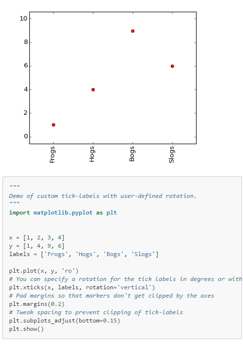
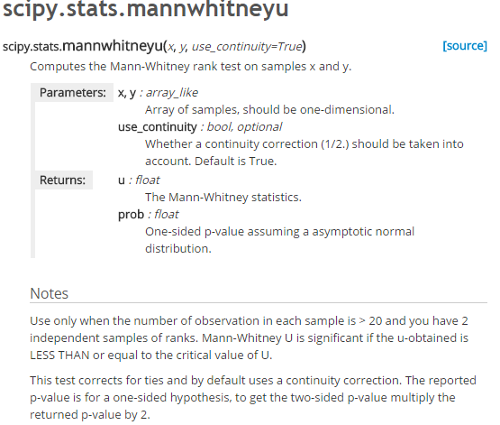

Analyzing the New York Subway Dataset
Your project could not be reviewed. Please resubmit after you address the issue noted by the reviewer.
Reviewer's Assessmentreadme.pdf is where all my answers are. I have tried to cite other work as much as possible however I didn't follow a specific standard. I tried to put links in the comments of places I had used to do different parts. I hope this is enough. If not let me know how you would like me reference the material I used.
Does Not Meet Specifications
Communication
Specification
Analysis done using methods learned in the course is explained in a way that would be understandable to a student who has completed the class.
Vernacular is appropriate for the scope of the class.
Specification
The answers are a well-formed summary of the analyses and do not leave out important information (e.g. fully answering the question).
I am not quite sure why this transformation was necessary. It used a lot of code to produce <0.5 R^2 value. My questions include...
- Have you attempted to create a model without performing transformation?
- Was calculating the means a way of speeding up computation?
Please explain this course of action further.
Quality of Visualizations
Specification
Plots depict relationships between two or more variables.
Complete
Specification
All plots and data are of the appropriate type.
Sparse scatter plots make it difficult to attach a point to the corresponding values on the y and x axis. Please consider using a bar plot. That way there is a clear bar that is leading to a clear point on the x-axis. The following link may help....
http://matplotlib.org/examples/pylab_examples/barchart_demo.html
Specification
All plots are appropriately labeled and titled. Plot is given an appropriate title. X-axis and y-axis are appropriately labeled. Visual cues (colors, size, etc) are easy to distinguish. It is clear what data are represented.
This specific plot has numbers representing days of the week. But the viewer does not know what the numbers are referencing. Does 0 mean Sunday, Monday....Wednesday? The following link will help you relabel the x-axis ticks. You can do this manually by using the xticks() function like this example....

Quality of Analysis
Specification
When using statistical tests and linear regression models, the choice of test type and features are always well justified based on the characteristics of the data.
WELL DONE
Treating Time-Series Variable
This is outside the scope of what is taught in the class.
Time-series is a tricky variable. In situations where one is concerned about how the passage of time affects the outcome variable, time-series variables can be treated as regular non-dummy variables. In this instance, however, we are not concerned about the passage of time as much as we are concerned about what time it is and how that affects the outcome variable. In this case, the time-series variable is, in fact, a categorical variable. This means the hour variable should technically be used as a dummy-variable with each instance in time having its own column and values indicating if it is that time or not.
Another way to conceptualize this is by looking at the differences in time visually. Let us say that ridership spiked during 2-6pm (4 hour difference). Would we expect to see that same spike at, lets say, 2-6am, even though the passage of time is equal? Probably not. That is because when it is matters more than how long it is.
SUGGESTION
I would have liked justification to create an OLS model using averages of the ENTRIESn_hourly across the dummy-variables.
Specification
Statistical tests and linear regression models are described thoroughly, and the reasons for choosing them are articulated clearly.
This question is asking for the non-dummy variable coefficients. Only the dummy-variable coefficients are displayed. Please include the non-dummy coefficients.
Specification
The use and interpretation of statistical techniques are correct.
Section 1.1/1.3
In Section 1.1, it is declared that the intention is to use a two-tail hypothesis test. In Section 1.3, however, a one-tail p-value is given. The Python Mann-Whitney U-test by default returns a one-tail results. I have attached an image to help...

http://docs.scipy.org/doc/scipy-0.15.1/reference/generated/scipy.stats.mannwhitneyu.html
Specification
All conclusions are correctly justified with data.
You have done a great job in explaining the meaning of the R^2 and how that relates to the data at hand. However, the project mentions looking at residuals would be an appropriate way to assess the appropriateness of the model and then again states However, based on graphs of the data... yet no graphs are present. Please describe the appropriateness of the model with evidence. One way to that is to examine the distributions of the residuals by viewing the residuals in a histogram. Be wary of long tails with high values when viewing the residual histogram - these typically mean we have some large errors and gives us ground to question the model. Here are a couple of methods to help....
Normality of Residuals with Probability Plot
http://docs.scipy.org/doc/scipy/reference/generated/scipy.stats.probplot.html
QQ plot
http://en.wikipedia.org/wiki/Q%E2%80%93Q_plot
Specification
No incorrect conclusions are drawn from the data.
In the sections prior, a two-tail test is intended but a one-tail result was used as justification for rejecting the null-hypothesis. Because of this, all subsequent conclusions made on this premise is in correct. Please correct Section 1.1/1.3, then reinterpret the results for this section and the area should *meet specification.
Specification
Some shortcomings of the dataset and statistical tests or regression techniques used are appropriately acknowledged.
Great job on describing a potential issue in the data.
When looking for shortcoming in regression analysis it is appropriate to show an examination of the residual distribution. Be wary of long tails with high error values as this is a sign of a poor regression fit. Specifically, you could talk about the suggestions I made for section 2.6.
Keep up the hard work! You are almost there. Hopefully my links can help.
| Reviews | Reviewed | Student Notes |
|---|---|---|
| This review | 1w ago |
readme.pdf is where all my answers are. I have tried to cite other work as much as possible however I didn't follow a specific standard. I tried to put links in the comments of places I had used to do different parts. I hope this is enough. If not let me know how you would like me reference the material I used. |